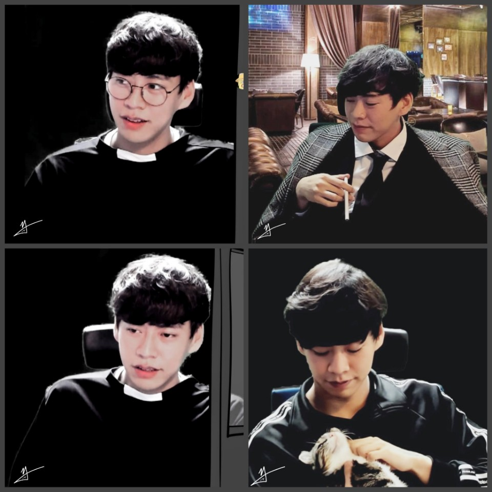

레바는 대한민국의 만화가 겸 트위치 스트리머. 네이버 블로그 등에서 개인 활동 할 당시의 정식명칭은 레스트 바티칸[11][12]이었으며 지명도가 오르면서 레바라는 닉을 주로 쓰기 시작했다. 트위치에선 갱뱅생레바라는 닉네임으로 활동중이다.
던전앤파이터 갤러리 출신으로 레진에서 데뷔하기 전부터[15] 던파 만화가였다. 요즘은 읭읭이 그림체 사이에 잠시 인간 모습 의 그림체가 나올때도 있다. 과거엔 본인의 네이버 블로그에서 헨젤과 그레텔, 서유기 등의 병신만화 시리즈를 그렸다.[16] 던갤에서 인기를 끌을 수 있었던 이유로는 찰진 비속어와 특정 캐릭터[17] 또는 패치, 이벤트 내용을 신랄하게 비판함으로써 많은 유저들로부터 공감을 얻을 수 있었다. 한 때 아라드 기자단도 맡았을 정도로 던파를 오랫동안 해온 하드코어 던파 유저다. 오죽하면 레진에서 연재하는 레바툰에서 자신의 직업이 던파이고 취미가 만화가라고 소개하기까지...본 캐릭터인 '레스트바티칸'의 직업은 남성 스핏파이어이다. 과거 자신의 만화에서 런처를 배틀메이지와 가루가 되도록 까는 컨셉으로 런처 유저 사이에서 악명이 높았으나 남성 런처를 띄워주는 만화로 던파 UCC 대회에서 대상을 받은 뒤로는 런까 컨셉을 접었고,[18] 후에 남런처와 남스핏의 취급 상태가 역변하자 전역 후 그리는 만화에서는 오히려 자신이 키우는 직업인 남스핏(마공맨)을 까며 자학 소재로 써먹기도 했다. 그러나 웹툰작가의 시작과 동시에 외주 및 스트리밍등 하는 일이 많은 탓에 현재는 지옥파티와 신캐 육성의 반복으로 던파에 대한 최신 정보는 거의 전무한 편인데 이로 인해 당시 정세에 맞게 그려왔던 던파 2차창작인 명왕은 못말려는 몇년째 연재중단 상태였다가 최근 픽시브에 작품이 올라왔다.
개인 블로그에서 캐릭터 커미션을 현금이 아니라 지옥파티 도전장을 받고 해줬고, 그 도전장을 판 것도 아니고 순수하게 헬 도는데 써서 웨슬리의 전술 풀세트를 맞춘 것을 본인 블로그에 인증하기도 했다. 본래 지옥파티를 자주 돌리긴 했으나 택틱셋은 하나도 없었지만, 5세트가 일주일만에 쏟아져나와 풀 세트를 모을 수 있었다고 한다. 이후 지옥파티가 시원치않은걸 보면 운을 다 쓴 듯.[19] 이젠 노력으로 모을수 있는 정가 에픽의 시대가 열렸지만 상술했듯이 웹툰에 스트리밍에 외주에 바빠서 던파를 할 시간도 없어서...